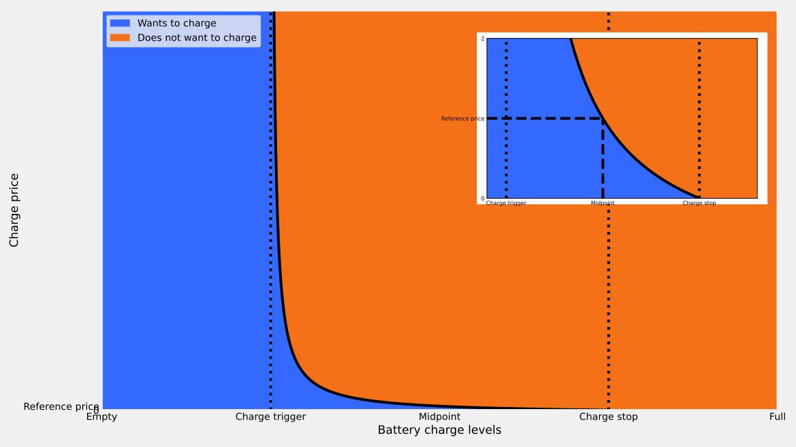

Determine the desire to charge
Whether a user wants to charge depends on the current battery charge level, the user's charge and stop triggers, and, where applicable, the charging price.
Three regions are distinguished:
- At or below the charge trigger, the user wants to charge irrespective of the charging price.
- At or above the stop trigger, the user does not want to charge, irrespective of the charging price.
- Between the charge and stop triggers, the decision depends on the balance between the user's charging need and the charging price.

The charging need describes how strongly a user wants to charge at a given battery charge level. For battery proportion \(b\), charge trigger \(b_t\), and stop trigger \(b_s\), the charging need between the two triggers is
The charging need increases as the battery level approaches the charge trigger and approaches zero as the battery level approaches the stop trigger. At the midpoint between the two triggers,
the charging need is equal to one:
Above the charge trigger, the charging need is compared with the price pain. The price pain is the actual charging price \(p\) relative to the user's reference price \(p_{\mathrm{ref}}\):
The user wants to charge when the charging need is at least as large as the price pain:
Equivalently, the maximum charging price that the user is willing to pay at a given battery charge level is
This is the boundary shown by the black curve in the figure. Below the curve, the charging price is sufficiently low and the user wants to charge. Above the curve, the user does not want to charge.
The reference price therefore has a direct interpretation. When the actual charging price is equal to the reference price,
the user is just willing to charge at the midpoint between the charge and stop triggers.
A reference price of zero disables price-sensitive charging. In that case, the user wants to charge only when the battery level is at or below the charge trigger. This reproduces threshold-only charging behaviour.
For normal charging, the charging decision is evaluated at the start of a charging session. If the user decides to charge, the decision is not reevaluated as the battery level rises during that session. Charging continues until the stop level is reached. Consequently, the charging decision is based on the charging price at the start of the session; subsequent price changes during the same session do not causee charging-desire formulation is used for fast charging, using separate fast-charging charge and stop triggers, charging prices, and reference prices. Setting the fast-charging reference price to zero restricts fast charging to the automatic fast-charge trigger. A small positive fast-charging reference price allows sufficiently attractive fast-charging prices to trigger fast charging above the automatic trigger as well.